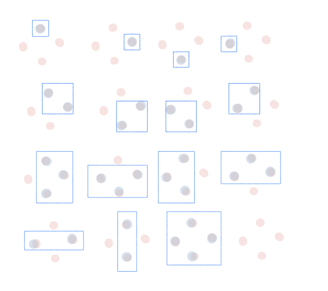

Final Review Notes#
Bias and Var#
The expected test error (or risk) for an input \( x \) can be decomposed as:
Where:
Bias is the difference between the expected prediction of our model and the true values. It measures how much, on average, our predictions differ from the true values.
Variance measures the variability of model predictions for different training sets. It indicates how much the predictions for a given point vary between different realizations of the model.
{kind=link}
Regularization: Importance, Reasons, and Approaches#
Reasons for Regularization:
Presence of irrelevant features and collinearity in the dataset.
Can lead to:
Ill-posed optimization problems, especially in linear regression.
Broken interpretability due to inflated or unreliable coefficients.
Importance:
Regularization introduces constraints to prevent overfitting.
Ensures stability in predictions and maintains model simplicity.
Helps in feature selection, especially with L1 regularization.
Approaches:
L2 Regularization (Ridge Regression):
Aims to re-condition the optimization problem.
Equivalently, it’s the Maximum a Posteriori (MAP) estimation in a Bayesian context with a Gaussian prior on weights.
L1 Regularization (The Lasso):
Induces sparsity in the model, effectively leading to feature selection.
Especially favored in situations with high-dimensional features but limited data points.
Multiple Intuitions:
Regularization can be understood through various lenses, including algebraic and geometric interpretations.
Model/Technique |
Type |
Description |
Regularization Effect |
|---|---|---|---|
Linear Regression |
Linear |
Simple linear relationship between predictors and response. |
- |
Ridge Regression |
Linear |
Linear regression with \(L2\) penalty on coefficients. |
Shrinks coefficients toward zero but doesn’t set them exactly to zero. |
The Lasso |
Linear |
Linear regression with \(L1\) penalty on coefficients. |
Can drive some coefficients to zero, effectively excluding them from the model (feature selection). |
Bayesian MAP (Gaussian Prior) |
Linear |
Bayesian interpretation of Ridge Regression. |
Similar effect as Ridge Regression with coefficients being shrunk toward zero. |
Bayesian MAP (Laplace Prior) |
Linear |
Bayesian interpretation of Lasso. |
Similar effect as Lasso, potentially setting some coefficients to zero. |
Non-linear Regression |
Non-linear |
Models capturing complex, non-linear relationships between predictors and response. |
- |
Neural Networks (with \(L1\) or \(L2\) regularization) |
Non-linear |
Networks of perceptrons capturing complex patterns in data. |
\(L1\) can make some weights zero (feature selection). \(L2\) shrinks weights toward zero but doesn’t usually set them to zero. |
Decision Trees (with pruning) |
Non-linear |
Hierarchical model that splits data based on feature thresholds. |
Pruning reduces the depth/complexity of the tree, avoiding overly specific splits. |
Kernel Methods (e.g., SVM with regularization) |
Non-linear |
Models that transform data into higher-dimensional spaces for linear separation. |
Choice of kernel and regularization parameter can control model flexibility and overfitting. |
Overfitting and Underfitting#
Model |
Overfitting Techniques |
Underfitting Techniques |
|---|---|---|
Linear Regression |
- Ridge or Lasso regularization |
- Polynomial features |
Decision Trees |
- Tree pruning |
- Increase tree depth |
SVM |
- Increase regularization |
- Decrease regularization |
Neural Networks |
- Dropout |
- Larger network |
k-NN |
- Increase \( k \) |
- Decrease \( k \) |
Logistic Regression |
- L1 or L2 regularization |
- Polynomial features |
CNN |
- Dropout |
- Deeper architecture |
RNN |
- Dropout |
- More layers/units |
LSTM |
- Dropout |
- More layers/units |
Naive Bayes |
- Use smoothing (e.g., Laplace) |
- Feature engineering |
Boosted Trees (e.g., XGBoost, AdaBoost) |
- Regularization |
- Increase tree depth |
Random Forest |
- Limit tree depth |
- Increase number of trees |
Gradient Boosting Machines (GBM) |
- Regularization |
- Increase depth/number of trees |
GRU (Gated Recurrent Unit) |
- Dropout |
- More layers/units |
Transformer (e.g., BERT, GPT) |
- Dropout |
- Larger model size (more layers/units) |
Autoencoders |
- Regularization |
- Increase network size |
Support Vector Regression (SVR) |
- Increase regularization |
- Decrease regularization |
Principal Component Analysis (PCA) |
- Use fewer components |
- Use more components |
k-Means |
- Reduce number of clusters |
- Increase number of clusters |
Hidden Markov Models (HMM) |
- Regularization |
- Increase number of states |
Note that generative models learn the joint probability distribution \( P(X, Y) \) and then use Bayes’ theorem to compute \( P(Y|X) \), whereas discriminative models learn the conditional probability distribution \( P(Y|X) \) directly.
Generative Models:
Naive Bayes
Autoencoders
Hidden Markov Models (HMM)
Gaussian Mixture Model (not listed before, but it’s generative)
Discriminative Models:
Linear Regression
Decision Trees
SVM (both classification and regression)
Neural Networks (including CNN, RNN, LSTM, GRU)
k-NN
Logistic Regression
Boosted Trees (e.g., XGBoost, AdaBoost)
Random Forest
Gradient Boosting Machines (GBM)
Transformers (e.g., BERT, GPT)
Others (neither strictly generative nor discriminative):
Principal Component Analysis (PCA) - Dimensionality reduction
k-Means - Clustering
PAC and VC#
PAC#
PAC (Probably Approximately Correct) learning is a theoretical framework used to describe and quantify the performance of machine learning models on unknown data.
In PAC learning, we hope the model is correct for most of the new, unseen data, but also allow for a small portion of errors. This is where the terms “Probably” and “Approximately Correct” come from.
This framework provides a way to theoretically guarantee the performance of the learning algorithm under certain conditions for new data.
VC#
当我们说 \( \text{VC}(\text{线}) = 3 \) 时，意思是在2D空间中（也就是平面上），线性分类器（由一条直线表示）的VC（Vapnik-Chervonenkis）维度是3。
进一步解释：
分割: 在VC维度的上下文中，“分割”一组点意味着对于这些点的每一个可能的标记（正或负），都存在我们分类器的某种配置（在这种情况下是一条线），可以根据该标记正确地对这些点进行分类。
VC维度: 一个假设类（例如2D中所有可能的线）的VC维度是该类可以分割的点的最大数量。它是该类的容量或复杂性的度量。
VC(线) = 3: 这意味着在2D中，线可以分割的点的最大数量是3。你可以在平面上找到3个点的配置，这样对于这些点的每一个可能的标记，都有某条线可以正确地对它们进行分类。但是，对于平面上任何4个点的配置，至少有一种标记方式，没有线可以正确地对所有四个点进行分类。
为了进一步澄清，虽然一条线可以分开平面上的任何三个点，但它不能处理任何四个点的所有可能的标记。因此，2D中所有线的集合的VC维度是3。
VC and PAC#
VC维度与无穷多的数据点相关，因为它度量了一个假设类可以分割的点的最大数量，而不考虑这些点的具体数量。换句话说，VC维度提供了对一个模型或假设类复杂性的上界，而不是对特定数据集的拟合。
在PAC（Probably Approximately Correct，大概近似正确）学习理论中，VC维度是一个关键概念，因为它允许我们在有限的样本上为模型的泛化性能提供保证。PAC学习的主要目标是确定在给定的置信度和精度下，训练一个假设类需要多少样本。VC维度为这个问题提供了一个答案。具体来说，高的VC维度意味着模型可能更复杂，可能需要更多的数据来进行有效的训练，而低的VC维度意味着模型可能较为简单。
因此，VC维度可以被看作是PAC学习理论的一个扩展，它为我们提供了一个工具来度量和控制模型的复杂性，从而确保在未见数据上的良好性能。
{kind=link}
VC(F) of a rectangle in 2D = 4
Linearity#
Aspect |
Linearly Separable Data |
Non-Linearly Separable Data |
|---|---|---|
Choice of Model |
- Linear models (e.g., Linear SVM, Logistic Regression) |
- Non-linear models (e.g., Kernel SVM, Decision Trees, Neural Networks) |
Feature Engineering |
- Minimal transformations required |
- Polynomial features, interaction terms, or domain-specific transformations might be beneficial |
Regularization |
- Might require stronger regularization to prevent overfitting due to perfect separation |
- Regularization still important, but the balance might differ |
Model Complexity |
- Simpler models often suffice |
- More complex models may be needed to capture data patterns |
Training Time |
- Typically faster due to simpler models |
- Potentially longer, especially with non-linear algorithms |
Interpretability |
- Linear models are usually more interpretable |
- Complex models (e.g., deep neural networks) might be harder to interpret |
Validation Strategy |
- Standard validation techniques apply |
- Ensuring diverse data in validation sets is crucial, given data’s complexity |
Risk of Overfitting |
- With perfect separation, there’s a risk of overfitting |
- Risk exists, especially with very flexible models. Techniques like pruning, dropout, or early stopping might be essential |
Kernel Methods (for SVM) |
- Linear kernel is often suitable |
- Non-linear kernels (e.g., RBF, polynomial) might be required |
MLE#
Maximum Likelihood Estimation (MLE)
Definition:
MLE finds the parameter values that make the observed data most probable.
\[ \theta_{MLE} = \arg\max_\theta P(D|\theta) \]Likelihood vs. Probability:
Probability: \( P(D|\theta) \) - Chance of observing data \( D \) given parameters \( \theta \).
Likelihood: \( L(\theta|D) = P(D|\theta) \) - “Probability” of parameters \( \theta \) given observed data \( D \) (not a true probability distribution over \( \theta \)).
Log-Likelihood:
Often easier to work with sum of logs than product of probabilities.
\[ l(\theta) = \log L(\theta|D) \]MLE for Common Distributions:
Bernoulli: \( \hat{p} = \frac{\text{number of successes}}{\text{number of trials}} \)
Normal:
Mean: \( \hat{\mu} = \frac{1}{n}\sum_{i=1}^n x_i \)
Variance: \( \hat{\sigma}^2 = \frac{1}{n}\sum_{i=1}^n (x_i - \hat{\mu})^2 \)
Properties:
Invariance: If \( \hat{\theta} \) is MLE of \( \theta \), then for any function \( g \), \( g(\hat{\theta}) \) is MLE of \( g(\theta) \).
Consistency: As sample size \( n \to \infty \), \( \hat{\theta}_{MLE} \) converges to true \( \theta \) (under regularity conditions).
Asymptotic Normality: MLEs are often approximately normally distributed for large \( n \).
Information Theory:
Fisher Information: Expected value of second derivative (negative) of the log-likelihood.
\[ I(\theta) = -E\left[ \frac{\partial^2 \log L(\theta|D)}{\partial \theta^2} \right] \]Optimization:
MLE often requires optimization techniques:
Analytical: Solve using calculus for \( \frac{\partial l(\theta)}{\partial \theta} = 0 \).
Numerical: Gradient descent, Newton-Raphson, etc.
Constraints:
Lagrange Multipliers: Used when there are constraints on parameters.
Regularization:
Add penalty terms to the likelihood to prevent overfitting.
MLE and OLS (BLUE)#
While MLE and BLUE (Best Linear Unbiased Estimator) can coincide under specific circumstances (such as in the linear regression model with normally distributed errors), they can yield different results in other settings or under different assumptions.
Property/Aspect |
MLE |
BLUE (e.g., OLS) |
|---|---|---|
Definition |
Maximizes the likelihood of observed data. |
Minimizes the sum of squared residuals. |
Estimation Goal |
Parameter that maximizes data likelihood. |
Linear estimator with minimum variance. |
Error Distribution (Linear Regression) |
Assumes specific distribution (e.g., normal for linear regression). |
No explicit distribution assumption, but BLUE under Gauss-Markov conditions. |
Efficiency |
Asymptotically efficient under certain conditions. |
Best among linear unbiased estimators under Gauss-Markov conditions. |
Bias |
Can be biased, especially in finite samples. |
Unbiased under Gauss-Markov assumptions. |
Applicability |
Broad (many models beyond linear regression). |
Primarily linear regression. |
Endogeneity |
Requires specific methods to address. |
OLS is biased; requires methods like IV. |
Regularization |
Can be incorporated, e.g., penalized likelihood. |
Methods like Ridge and Lasso introduce bias for regularization. |
Different Error Distributions:
In the context of the linear regression model, if the errors are not normally distributed, the MLE for the parameters might differ from the OLS estimator (which is BLUE under Gauss-Markov assumptions). For instance, if the errors follow a Laplace distribution, the MLE would lead to a form of robust regression that minimizes the sum of absolute residuals, which differs from the OLS solution.
Generalized Linear Models:
For generalized linear models (e.g., logistic regression, Poisson regression), the link function and error distribution can differ from the normal distribution. In these cases, the MLE is typically used to estimate the parameters, and it won’t coincide with the BLUE, which is a concept primarily related to linear models.
Violation of Gauss-Markov Assumptions:
If any of the Gauss-Markov assumptions (e.g., homoscedasticity, no autocorrelation) are violated, then while OLS remains unbiased, it is no longer the Best (in terms of minimum variance) among the linear unbiased estimators. In such cases, Generalized Least Squares (GLS) might be employed, which could differ from the MLE.
Non-Linear Models:
For models that are inherently non-linear in parameters, the concept of BLUE may not apply directly. However, MLE can be used for parameter estimation. The estimates from non-linear MLE will be different from any linear unbiased estimator.
Presence of Endogeneity:
If there is endogeneity in the model (i.e., one or more independent variables are correlated with the error term), OLS is no longer unbiased. Instrumental variables (IV) or two-stage least squares (2SLS) might be employed to rectify this. The resulting IV or 2SLS estimator could differ from the MLE, especially if the error terms are not normally distributed.
Finite Sample Differences:
Even when the OLS estimator (which might be BLUE) and the MLE coincide asymptotically (i.e., as the sample size goes to infinity), they might differ in finite samples, especially under model misspecification or certain distributional assumptions.
Regularization and Model Complexity:
In modern statistical learning and when dealing with high-dimensional data, regularization techniques (like Lasso or Ridge regression) are often employed. These estimators intentionally introduce bias to reduce variance and avoid overfitting. The resulting regularized estimators differ from both the traditional BLUE and MLE.
In summary, while MLE and BLUE can coincide in specific scenarios, they are based on different principles and can diverge in various contexts, especially when assumptions are violated or in more complex models.
MLE estimation example#
I apologize for the oversight. Let’s provide a step-by-step derivation for the MLE of the mean and variance of a normal distribution.
Derivation of MLE for Normal Distribution Parameters
Given:
Data: \( x_1, x_2, \ldots, x_n \)
Normal distribution PDF:
Step 1: Likelihood Function
Step 2: Log-Likelihood Function
Step 3: Differentiate w.r.t. \( \mu \)
Setting this to zero and solving for \( \mu \) gives:
Step 4: Differentiate w.r.t. \( \sigma^2 \)
Setting this to zero and solving for \( \sigma^2 \) gives:
MLE and optimisation#
The Maximum Likelihood Estimation (MLE) process for logistic regression aims to find the parameter values that maximize the likelihood of observing the given data.
Model Specification: For logistic regression, the probability \( p(y_i = 1 | \mathbf{x}_i) \) that the response \( y_i \) equals 1 given predictors \( \mathbf{x}_i \) is modeled as:
where \( \mathbf{x}_i \) is a vector of predictor variables for the \( i \)-th observation and \( \beta_0, \beta_1, \ldots, \beta_k \) are parameters to be estimated.
Likelihood Function: For binary logistic regression with outcome \( y_i \) being 0 or 1:
This function gives the joint probability of observing the entire set of outcomes in the sample.
Log-Likelihood: Due to the product form of the likelihood function, it’s computationally more convenient to work with the log-likelihood:
Maximize the Log-Likelihood: The goal of MLE is to find the parameter values \( \beta_0, \beta_1, \ldots, \beta_k \) that maximize the log-likelihood function. This is typically done using numerical optimization techniques, such as the Newton-Raphson method or gradient ascent.
Estimates: The values of \( \beta_0, \beta_1, \ldots, \beta_k \) that maximize the log-likelihood are the MLEs for the parameters.
Check Convergence: The optimization process is iterative. At each step, the algorithm updates the parameter estimates in a direction that increases the log-likelihood. Convergence is achieved when the change in log-likelihood between iterations is smaller than a predefined threshold.
Assess Model Fit: Once you have the MLEs, you can assess the fit of the logistic regression model using various statistics, such as the deviance, Akaike’s Information Criterion (AIC), or the Hosmer-Lemeshow goodness-of-fit test.
Optimization algorithms#
Optimization algorithms aim to find the best solution (or solutions) to a problem from a set of possible solutions. In machine learning and deep learning, the primary goal of an optimization algorithm is to minimize (or maximize) an objective function, typically known as the loss or cost function. By adjusting the model’s parameters, optimization algorithms try to find the parameter values that result in the lowest possible loss for the given data.
Optimization Algorithm |
Description |
|---|---|
Gradient Descent (Batch) |
Updates the parameters in the direction of the negative gradient of the entire dataset at each iteration. |
Stochastic Gradient Descent (SGD) |
Updates the parameters using only one training example at a time. It can be noisier but often faster than batch gradient descent. |
Mini-batch Gradient Descent |
A compromise between batch and stochastic gradient descent: updates parameters using a subset (or “mini-batch”) of the training data. |
Momentum |
Uses a moving average of past gradients to accelerate convergence and reduce oscillations. |
Nesterov Accelerated Gradient (NAG) |
A variant of momentum that computes the gradient after the momentum update, leading to more accurate parameter updates. |
AdaGrad |
Adjusts the learning rate for each parameter based on the historical squared gradients. |
RMSProp |
Modifies AdaGrad to use a moving average of squared gradients, preventing the learning rate from decreasing too rapidly. |
Adam |
Combines elements of Momentum and RMSProp. Maintains moving averages of both gradients and squared gradients. |
Adadelta |
An extension of AdaGrad that reduces its aggressive, monotonically decreasing learning rate. |
FTRL (Follow-the-Regularized-Leader) |
Especially suited for large-scale and online learning. Often used with L1 regularization for feature selection. |
L-BFGS (Limited-memory Broyden-Fletcher-Goldfarb-Shanno) |
A quasi-Newton method that approximates the second-order derivative (Hessian) to guide the parameter updates. Suitable for smaller datasets. |
Conjugate Gradient |
Uses conjugate directions (instead of just the gradient) to avoid re-visiting previously minimized directions. Used for non-linear optimizations. |
Gradient Descent Algorithm:#
Initialize the parameter vector \( \theta \) randomly or with zeros.
Repeat for a specified number of iterations or until convergence:
Compute the gradient of the average loss over the training set:
Update the parameter vector:
Where:
\( J(\theta) \) is the average loss over the training set.
\( \alpha \) is the learning rate, a hyperparameter that determines the step size during each iteration of the gradient descent. A higher value makes the algorithm converge faster but risks overshooting the minimum, while a lower value ensures more accurate convergence but might be slower.
Stochastic Gradient Descent (SGD):#
Stochastic Gradient Descent differs from the standard Gradient Descent in the following ways:
Random Single Sample: Instead of calculating the gradient based on the entire training set, SGD randomly selects one example (\( x_i, y_i \)) at a time to compute the gradient.
Frequent Updates: Since it uses only one example at a time, the parameter vector \( \theta \) is updated more frequently, leading to much noisier steps.
Convergence: The frequent and noisy updates mean that SGD may never settle at the minimum. Instead, it will oscillate around the minimum. To mitigate this, the learning rate \( \alpha \) is often gradually decreased during training (e.g., learning rate annealing).
Efficiency and Scalability: SGD can be faster and more scalable than standard gradient descent, especially when the training set is large, because it starts making updates to \( \theta \) immediately.
In summary, while standard gradient descent computes the average gradient using the entire training set, stochastic gradient descent approximates the gradient using a single, randomly-selected training example. This makes SGD noisier but often faster and more suitable for large datasets.
NN#
Backpropogation#
RNN and BPTT#
Sequential Data:
RNNs process data one step at a time with a maintained hidden state.
Temporal Dependencies:
RNNs capture relationships across sequence steps.
Backpropagation Through Time (BPTT):
Adjusts weights considering past steps.
Essential due to the influence of prior inputs on current outputs.
BPTT ensures RNNs account for the entire sequence when updating weights.
Optimisation Algorithm (NN vs Other)#
Optimization algorithms in neural networks (NN) and traditional machine learning models serve the same fundamental purpose: minimizing (or maximizing) an objective function, typically the loss or cost function. However, there are differences in the challenges posed by these models, leading to nuances in the optimization techniques used. Let’s explore these differences:
Scale of Parameters:
Neural Networks: NNs, especially deep networks, can have millions to billions of parameters. Optimizing such a large parameter space introduces challenges not typically found in traditional models.
Traditional ML Models: These models often have fewer parameters. For instance, linear regression has one parameter for each feature (plus a bias).
Non-Convexity:
Neural Networks: The loss surfaces of deep NNs are non-convex, meaning they have many local minima, saddle points, and complex structures. This makes the optimization landscape challenging.
Traditional ML Models: Some traditional models (like linear regression with a squared error loss) have convex loss surfaces, ensuring a unique global minimum.
Stochasticity:
Neural Networks: Due to their size and complexity, NNs are often trained using stochastic methods (like mini-batch gradient descent) to speed up convergence.
Traditional ML Models: While stochastic methods can be used, many traditional algorithms can efficiently process the entire dataset in one iteration.
Regularization Techniques:
Neural Networks: NNs introduce unique regularization techniques like dropout, batch normalization, and weight normalization to combat overfitting and aid optimization.
Traditional ML Models: Regularization techniques for traditional models often revolve around adding penalty terms to the loss (e.g., L1 and L2 regularization).
Learning Rate Scheduling:
Neural Networks: Adaptive learning rate techniques and schedulers (like learning rate annealing or cyclical learning rates) are more commonly employed in NN training to ensure convergence in complex landscapes.
Traditional ML Models: While adaptive learning rates can be used, many traditional algorithms converge well with fixed or simpler learning rate strategies.
Optimization Algorithms:
Neural Networks: Advanced optimization algorithms like Adam, RMSProp, and Nadam, which combine momentum and adaptive learning rates, are popular in deep learning.
Traditional ML Models: Simpler algorithms like gradient descent, conjugate gradient, and L-BFGS are often sufficient for these models.
Challenge of Vanishing/Exploding Gradients:
Neural Networks: Deep networks face the issue of vanishing or exploding gradients, which can hinder training. Techniques like gradient clipping and careful weight initialization are used to mitigate this.
Traditional ML Models: These issues are less prevalent in traditional models.
Parallelism and Hardware Acceleration:
Neural Networks: Training large NNs benefits significantly from parallelism and hardware acceleration (e.g., GPUs). Optimization algorithms are sometimes adapted to better leverage these hardware capabilities.
Traditional ML Models: While some models can be parallelized or hardware-accelerated, the gains are often less pronounced than in deep learning.
In summary, while the core principles of optimization remain consistent across neural networks and traditional machine learning models, the scale, complexity, and challenges posed by deep learning have led to the development and adaptation of various optimization strategies specific to neural networks.
LSTM and RNN#
Feature/Aspect |
RNN |
LSTM |
|---|---|---|
Gradient Issues |
Prone to vanishing/exploding gradient problems. |
Designed to mitigate the vanishing gradient problem. |
Gating Mechanisms |
None |
Uses input, forget, and output gates to regulate information flow. |
Memory |
Only has a hidden state. |
Has both a hidden state and a cell state, allowing for longer-term memory. |
Complexity |
Simpler, fewer parameters. |
More complex with more parameters, but this leads to better performance on many tasks. |
Performance on Sequences |
Struggles with long-term dependencies. |
Excels in capturing long-term dependencies in data. |
Flexibility |
Basic structure. |
Variants like Bi-directional LSTMs and Peephole LSTMs offer enhanced capabilities. |
Training Stability |
Harder to train on long sequences. |
More stable and consistent training, especially on tasks with long sequences. |
This table offers a condensed view of the main differences and improvements of LSTMs over traditional RNNs.
SVM#
lamda and C#
In the context of a soft-margin SVM, \( \lambda \) (often denoted as \( \alpha \) in many textbooks) and \( E \) (often referred to as \( \xi \) or slack variables) have specific interpretations:
Lagrange Multipliers (\( \lambda \) or \( \alpha \)):
\( \lambda = 0 \): The training example is correctly classified and lies outside the margin. It doesn’t influence the decision boundary.
\( 0 < \lambda < C \): The training example lies on the margin’s boundary and is correctly classified. It is a support vector.
\( \lambda = C \): The training example is wrongly classified, despite its position to the boundary.
\( \lambda > C \): impossible
Slack Variables (\( E \) or \( \xi \)):
\( E = 0 \): The training example is correctly classified and lies on the correct side of the margin.
\( 0 < E < 1 \): The training example is correctly classified but lies inside the margin.
\( E = 1 \): The training example lies exactly on the decision boundary.
\( 1 < E < 2 \): The training example is misclassified but lies within the margin.
\( E > 2 \): The training example is misclassified and lies outside the margin on the wrong side.
So, for the points A, B, C, and D, you’d use the criteria listed above to determine the values of \( \lambda \) and \( E \) based on their positions relative to the decision boundary and margin. The exact values would depend on the specific locations of these points in relation to the SVM’s decision boundary and margin.
Kernel Proof#
Mercer’s Theorem: Mercer’s theorem provides a criterion to determine if a given function can be used as a kernel.
For a function \( K \) to be a valid kernel:
It must take two inputs from the input space and produce a scalar.
The resulting matrix, formed by evaluating the kernel on every pair of data points from a dataset, must be positive-semidefinite for any choice of dataset.
The steps you mentioned can be interpreted as follows:
Consider a Finite Sequence of Objects:
Suppose you have a finite set of data points \(\mathbf{x}_1, \mathbf{x}_2, \ldots, \mathbf{x}_n\).
Construct the Kernel Matrix:
For every pair of points in this dataset, compute the kernel function’s value, resulting in an \( n \times n \) matrix \( K \) where each entry \( K_{ij} \) is computed as \( K(\mathbf{x}_i, \mathbf{x}_j) \).
Positive-Semidefinite Criterion:
The function \( K \) is a valid kernel if and only if the matrix \( K \) is positive-semidefinite for every possible choice of dataset \(\mathbf{x}_1, \mathbf{x}_2, \ldots, \mathbf{x}_n\).
Example with Mermer’s#
We’ll use Mercer’s theorem to verify if the polynomial kernel is a valid kernel.
Polynomial Kernel: Given two vectors \( \mathbf{x} \) and \( \mathbf{y} \), the polynomial kernel of degree \( d \) is defined as:
Proof: To prove that the polynomial kernel is valid using Mercer’s theorem, we need to demonstrate that the kernel matrix is positive-semidefinite for any dataset.
Kernel Matrix Construction: Given a dataset \( \mathbf{x}_1, \mathbf{x}_2, \ldots, \mathbf{x}_n \), we construct the \( n \times n \) kernel matrix \( K \) where each entry \( K_{ij} \) is \( (1 + \mathbf{x}_i \cdot \mathbf{x}_j)^d \).
Positive-Semidefiniteness: A matrix is positive-semidefinite if and only if all of its eigenvalues are non-negative.
Consider an arbitrary vector \( \mathbf{z} \) with components \( z_1, z_2, \ldots, z_n \). We want to prove that:
Using our kernel definition:
This quantity is a polynomial sum of products of dot products. Each term in the expansion will be non-negative because it’s a product of \( d \) terms, each of which is non-negative.
Hence, the polynomial kernel satisfies the positive-semidefiniteness criterion for any dataset.
Conclusion: By Mercer’s theorem, the polynomial kernel \( K(\mathbf{x}, \mathbf{y}) = (1 + \mathbf{x} \cdot \mathbf{y})^d \) is a valid kernel.
Note: This proof provides an intuition for the polynomial kernel’s validity, but a more rigorous proof would delve deeper into the properties of positive-semidefinite matrices and the binomial expansion.
sum#
The provided proofs demonstrate that the sum of two positive semidefinite (psd) kernel functions is also a psd kernel function. Let’s go through the two proofs and provide a clearer understanding of each:
Proof 1: Gram Matrix is psd Statement: If \( k_a \) and \( k_b \) are two psd kernels with corresponding Gram matrices \( A \) and \( B \) for any set of points \({x_i}^n_{i=1}\), then the kernel \( k \) defined by the sum of \( k_a \) and \( k_b \) is also a psd kernel.
Proof: Given any vector \( \alpha \in \mathbb{R}^n \), the quadratic form of the Gram matrix for \( k \) is:
Since both \( A \) and \( B \) are psd, their quadratic forms are non-negative:
Adding the two inequalities:
This means that the Gram matrix for \( k \) is also psd. Therefore, \( k \) is a psd kernel.
Proof 2: Feature Maps Statement: Given two psd kernels \( k_a \) and \( k_b \) with associated Reproducing Kernel Hilbert Spaces (RKHS) \( \mathcal{H}_a \) and \( \mathcal{H}_b \) and feature maps \( \phi_a \) and \( \phi_b \), the sum of these two kernels can be represented using the direct sum of their RKHS.
Proof: Define the RKHS \( \mathcal{H} \) as the direct sum of \( \mathcal{H}_a \) and \( \mathcal{H}_b \):
An arbitrary element in \( \mathcal{H} \) is represented as \( f_a \oplus f_b \).
The inner product in \( \mathcal{H} \) is given by:
Now, define the feature map for \( k \) as:
Using this feature map, we can express \( k \) as:
This expands to:
Thus, \( k \) is also a valid psd kernel.
Both of these proofs provide evidence that the sum of two psd kernels is also a psd kernel. The first proof uses properties of the Gram matrix, while the second proof utilizes the properties of the feature maps and RKHS.
product#
Proof: Product of Two Kernels
Given: Two valid kernel functions \( K_1 \) and \( K_2 \) such that:
To Prove: The product \( K(x, y) = K_1(x, y) K_2(x, y) \) is also a valid kernel function.
Proof:
Begin by expressing the product of the two kernels:
Now, define a new set of basis functions as the product of the basis functions from the two original kernels:
With this new definition, the product kernel can be written as:
Since the resulting kernel function, \( K(x, y) \), can be expressed as an inner product of a new set of basis functions, it retains the essential property of a kernel.
Conclusion: The product of two valid kernel functions, \( K_1 \) and \( K_2 \), results in another valid kernel function, \( K \).
This structured proof breaks down the multiplication of two kernels and demonstrates that their product can also be represented as a kernel, maintaining the defining properties of a kernel function.
exp#
Proof: Exponential of a Kernel
Given: A valid kernel function \( K \).
To Prove: The exponential function of the kernel, \( \exp(K) \), is also a valid kernel.
Proof:
Taylor Expansion:
Using the Taylor expansion of the exponential function centered at 0, we have:
This expansion represents the exponential of \( K \) as an infinite series consisting of linear combinations and products of powers of the kernel \( K \).
Kernel Properties:
From known properties of kernels: - The sum of two valid kernels is a valid kernel: \( K' = \alpha K_1 + \beta K_2 \). - The product of two valid kernels is a valid kernel: \( K' = K_1 K_2 \).
Given the kernel \( K \), any power of \( K \) (e.g., \( K^2, K^3 \)) is also a valid kernel due to the property of products. Also, any linear combination (as seen in the Taylor expansion) would also be a valid kernel due to the property of sums.
Conclusion:
Using the properties of kernel addition and multiplication, every term in the Taylor expansion of \( \exp(K) \) represents a valid kernel. As the sum of valid kernels remains valid, the entire series is a valid kernel.
Thus, the exponential of a kernel, \( \exp(K) \), is also a valid kernel.
general proof solutions#
To prove that a function \( k \) is a valid kernel, one generally needs to demonstrate that the kernel matrix (or Gram matrix) constructed using \( k \) is positive semi-definite (PSD) for any set of input data points. Here are the general approaches to prove this:
Direct Method:
Construct the Gram matrix \( K \) using the kernel function \( k \) for any set of data points.
Show that for any vector \( \alpha \) of appropriate dimensions, the value of \( \alpha^T K \alpha \) is non-negative. If this is true for all such \( \alpha \), then \( K \) is PSD, and \( k \) is a valid kernel.
Using Kernel Properties:
Closure Properties: Kernels have several closure properties. For instance, if \( k_1 \) and \( k_2 \) are kernels, then the following are also kernels:
\( c \cdot k_1 \) for \( c > 0 \)
\( k_1 + k_2 \)
\( k_1 \times k_2 \)
\( f(x) \cdot k_1(x, y) \cdot f(y) \) for any function \( f \)
Using these properties, one can construct new kernels from known kernels.
Mercer’s Theorem:
Mercer’s theorem provides conditions under which a function can be expressed as an inner product in some (possibly infinite-dimensional) feature space, and therefore is a kernel. If a function satisfies Mercer’s conditions (related to non-negative integrals over the product of the function with test functions), it is a valid kernel.
Feature Map Representation:
Demonstrate that there exists a feature map \( \phi \) such that \( k(x, y) = \langle \phi(x), \phi(y) \rangle \), where \( \langle \cdot, \cdot \rangle \) denotes the inner product. If you can explicitly find or describe such a feature map, then \( k \) is a kernel.
Using Existing Kernels:
Sometimes it’s easier to derive new kernels based on known kernels. If you can express a function in terms of operations and compositions that preserve the kernel property, then the function is a valid kernel.
Eigenvalues:
Another way to prove a matrix is PSD is by showing all its eigenvalues are non-negative. However, computing eigenvalues might not always be feasible, especially for infinite-dimensional spaces.
Unconventional Data#
Data Structure |
Kernel Type |
Application Example |
Description |
|---|---|---|---|
Strings |
String Kernels |
DNA or protein sequences |
Compares variable-length strings based on patterns, subsequences, etc. |
Graphs |
Graph Kernels |
Cheminformatics, social network analysis |
Measures similarity based on shared subgraphs, paths, or other graph features. |
Sets |
Set Kernels |
“Bag of words” for text data |
Computes similarity between sets based on overlap, shared items, etc. |
Images |
Image Kernels |
Computer vision tasks |
Compares images based on shared visual patterns, color histograms, texture, etc. |
Trees |
Tree Kernels |
Natural language processing (sentence parsing) |
Computes similarity between trees (like parse trees) based on shared subtrees or structures. |
Note on Validity:
A function is a valid kernel if the Gram matrix it induces is positive-semidefinite for any dataset, ensuring it corresponds to a dot product in some feature space.
Popular Kernels#
Kernel Type |
Formula |
Properties |
|---|---|---|
Linear Kernel |
\( K(\mathbf{x}, \mathbf{y}) = \mathbf{x} \cdot \mathbf{y} \) |
- Equivalent to standard dot product in input space. |
Polynomial Kernel |
\( K(\mathbf{x}, \mathbf{y}) = (c + \mathbf{x} \cdot \mathbf{y})^d \) |
- Maps data to polynomial feature space. |
RBF/Gaussian Kernel |
\( K(\mathbf{x}, \mathbf{y}) = \exp\left(-\frac{|\mathbf{x} - \mathbf{y}|^2}{2\sigma^2}\right) \) |
- Maps data to an infinite-dimensional space. |
Sigmoid Kernel |
\( K(\mathbf{x}, \mathbf{y}) = \tanh(k \mathbf{x} \cdot \mathbf{y} + c) \) |
- Used in neural networks. |
Laplacian Kernel |
\( K(\mathbf{x}, \mathbf{y}) = \exp\left(-\frac{|\mathbf{x} - \mathbf{y}|_1}{\sigma}\right) \) |
- Similar to RBF but uses \( L_1 \) norm. |
ANOVA Kernel |
Customized for regression problems |
- Suitable for data with multiplicative feature combinations. |
Key Takeaways:
The choice of kernel significantly impacts machine learning algorithm performance, especially in SVMs.
Some kernels have parameters that require tuning to optimize performance.
Ensure the kernel matrix is positive-semidefinite for valid kernel functions.
CNN#

CNN and VI#
Convolutional Layers:
Use filters with shared weights.
Detect features anywhere in the image, ensuring consistent feature recognition regardless of position.
Pooling Layers:
Down-sample feature maps (e.g., max-pooling).
Reduce sensitivity to exact feature locations, adding another layer of spatial invariance.
Together, these components enable CNNs to achieve translation-invariant classifications by recognizing and classifying image content regardless of its spatial position.
Generative vs Discriminative#
Of course, I can help clarify the difference between generative and discriminative models.
Generative models attempt to model how the data is generated. They capture the joint probability distribution \( P(X, Y) \), where \( X \) is the feature and \( Y \) is the label or class. Using this joint distribution, they can compute the conditional probability \( P(Y|X) \) for prediction.
Discriminative models focus on distinguishing between classes. They model the boundary between classes and learn the conditional probability \( P(Y|X) \) directly without worrying about how the data is generated.
Criteria |
Generative Models |
Discriminative Models |
|---|---|---|
Description |
Model how the data is generated. |
Model the boundary between classes. |
What They Learn |
Distribution of each class. |
Boundary between classes. |
Examples |
Gaussian Mixture Models, Naïve Bayes, Hidden Markov Models. |
Logistic Regression, SVM, Random Forests, Neural Networks. |
Advantages |
Can generate new data points. More robust with limited data. |
Often more accurate in classification with ample data. |
Drawbacks |
Might be less accurate in classification tasks. |
Cannot generate new data points. |
Analogy |
Studying individual apples and oranges. |
Looking directly at differences between apples and oranges. |
Autoencoder#
Autoencoders
Purpose: Unsupervised learning, initialization, efficient coding, and data compression.
Idea: Train a neural network to reproduce its input, i.e., model \( p(x|x) \).
Topology:
Input and output are the same.
Bottleneck layer: Thinner than input, leading to data compression.
Variations: Introduce noise to input, regularize to make the bottleneck layer sparse or to contract inputs.
Bottleneck:
If the network can restore the original signal effectively, the data structure can be described by a lower-dimensional representation in the bottleneck.
Under-/Over-completeness:
Undercomplete: Thinner bottleneck forces the model to generalize.
Overcomplete: Wider bottleneck can simply copy input to output. However, trivial codes can still be learned.
Uses:
Compression, dimensionality reduction, unsupervised pre-training, and discovering latent feature space.
Achieves non-linear transformation.
Related to PCA but provides non-linear dimensionality reduction.
PCA vs. Autoencoding:
Using linear activations with one hidden layer makes the setup similar to PCA.
PCA finds orthonormal basis; Neural network might find a different solution.
Applications of Autoencoders:
Data visualization & clustering.
Feature representation for off-the-shelf ML methods.
Pre-training deep models: Initialize weights with encoder parameters. In some fields, replaced with supervised pre-training on large datasets.
MAP#
Difference between MAP and Full Bayesian Inference:#
Maximum a Posteriori (MAP):
MAP estimation provides a point estimate of a model parameter. Specifically, it estimates the mode of the posterior distribution.
It is formulated as:
It combines the likelihood \( P(\text{data} | \theta) \) with the prior \( P(\theta) \) but doesn’t fully account for the uncertainty in the parameter’s distribution.
Full Bayesian Inference:
Instead of a point estimate, full Bayesian inference considers the entire posterior distribution of the model parameter.
Predictions are made by integrating over all possible parameter values, weighted by their posterior probabilities.
This method captures the inherent uncertainty in parameter estimates.
Situation where MAP and Full Bayesian Inference produce different predictions:
Consider a scenario where you’re estimating the bias of a coin based on a series of tosses. Let’s assume you have a bimodal posterior distribution for the bias: one peak (mode) near \( \theta = 0.2 \) and another near \( \theta = 0.8 \), but the latter peak is broader.
Using MAP, you’d pick the bias of the coin as the value corresponding to the highest peak, let’s say \( \theta = 0.2 \).
With Full Bayesian Inference, when making predictions (like the probability of the next toss being heads), you’d average over both modes. Because the broader mode near \( \theta = 0.8 \) has a more substantial portion of the probability mass, the full Bayesian prediction might be closer to that of a coin with bias \( \theta = 0.8 \) than \( \theta = 0.2 \).
In this situation, despite the MAP estimate being \( \theta = 0.2 \), the full Bayesian approach might predict as if the bias is closer to \( \theta = 0.8 \), showcasing how the two methods can lead to different predictions.
{kind=link}
MAP and ridge regression solution.#
MAP estimate in a Bayesian framework with a normal prior on the coefficients is equivalent to the ridge regression solution.
Bayesian Interpretation of Ridge Regression
Given a response vector \( y \) and a design matrix \( X \), the ordinary least squares (OLS) method aims to find a coefficient vector \( \beta \) that minimizes the residual sum of squares (RSS):
Ridge regression builds upon OLS by adding a penalty term to the RSS, leading to:
where \( \lambda \) is a non-negative hyperparameter.
From a Bayesian viewpoint, assuming \( X \) is fixed, OLS presumes the conditional distribution of \( y \) as:
where \( \sigma \) is a positive constant. While frequentist statistics treats \( \beta \) as an unknown fixed vector, Bayesian statistics introduces a prior distribution on \( \beta \). Supposing the elements of \( \beta \) are independent normals with equal variance, the prior is:
The posterior distribution of \( \beta \) is then:
The maximum a posteriori (MAP) estimate, or the mode of this posterior, is equivalent to:
which matches the ridge regression estimate when the regularization strength \( \lambda \) is set to \( \frac{\sigma^2}{\tau^2} \).
This summary underlines the connection between ridge regression and Bayesian statistics by highlighting the role of priors and the relationship between the penalty term in ridge regression and the posterior distribution in Bayesian estimation.
MAP and MLE#
Feature |
MLE |
MAP |
|---|---|---|
Definition |
Maximizes the likelihood of the data given the parameter |
Maximizes the posterior distribution of the parameter given the data |
Based On |
Likelihood of the data |
Combination of likelihood of the data and a prior distribution |
Incorporates Prior Knowledge? |
No |
Yes |
Formula |
||
Objective |
Describe data as observed |
Combine prior beliefs with data |
Sensitivity to Sample Size |
Sensitive, especially with small sample sizes |
Can be more robust with informative priors especially with small sample sizes |
Asymptotic Behavior |
Converges to the true parameter value with enough data |
Converges to true parameter value with enough data and a non-dogmatic prior |
Use Case |
When prior knowledge is absent or intentionally not used |
When prior knowledge is available and it’s desirable to incorporate it into the estimation |
Interpretation |
Frequency-based |
Bayesian |
At which case is MAP same as MLE#
For MLE:
For MAP:
In summary, the MAP is equivalent to the MLE when the prior is uniform or non-informative.
PGM#
{kind=link}